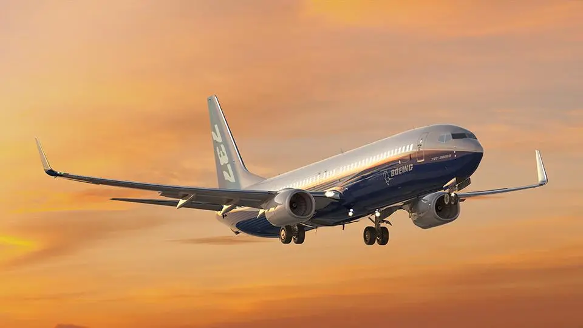
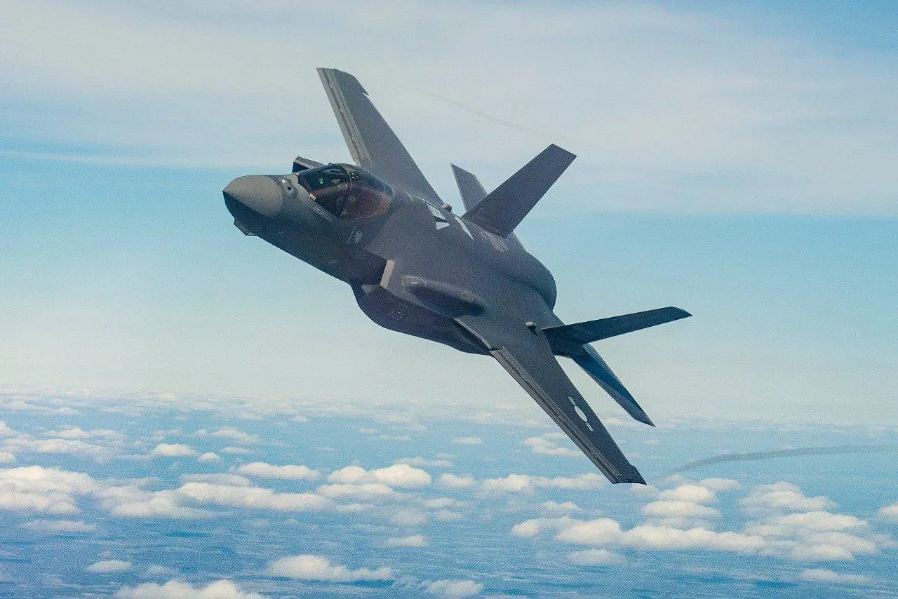

Lift
Lift is the upward force that opposes the weight of an aircraft and keeps it in the air.
Discover how aircraft fly through the principles of aerodynamics, lift, drag, thrust, and weight.
Aerodynamics is the study of how air moves around objects. It plays a critical role in aviation, aerospace engineering, and modern aircraft design. Understanding aerodynamic forces helps engineers create safer, faster, and more efficient aircraft.
This website introduces the fundamental concepts of flight and explores how modern aircraft use aerodynamic principles to travel through the atmosphere.
Lift is the upward force that opposes the weight of an aircraft and keeps it in the air.
Weight is the downward force caused by gravity acting on the aircraft.
Thrust is generated by engines and moves the aircraft forward.
Drag is the aerodynamic resistance that opposes forward motion.

One of the world's most successful commercial passenger aircraft used by airlines globally.

A fifth-generation multirole fighter aircraft designed for advanced combat operations.
Loading aircraft information...